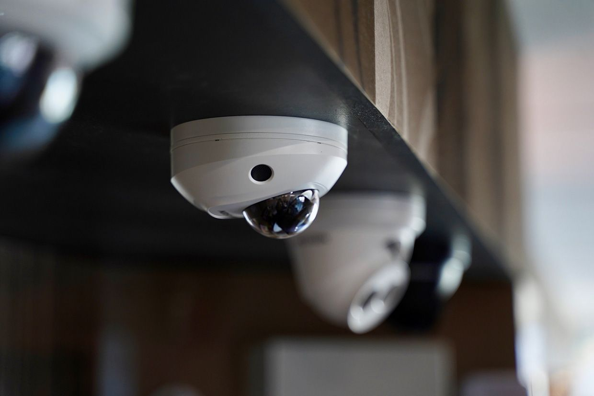
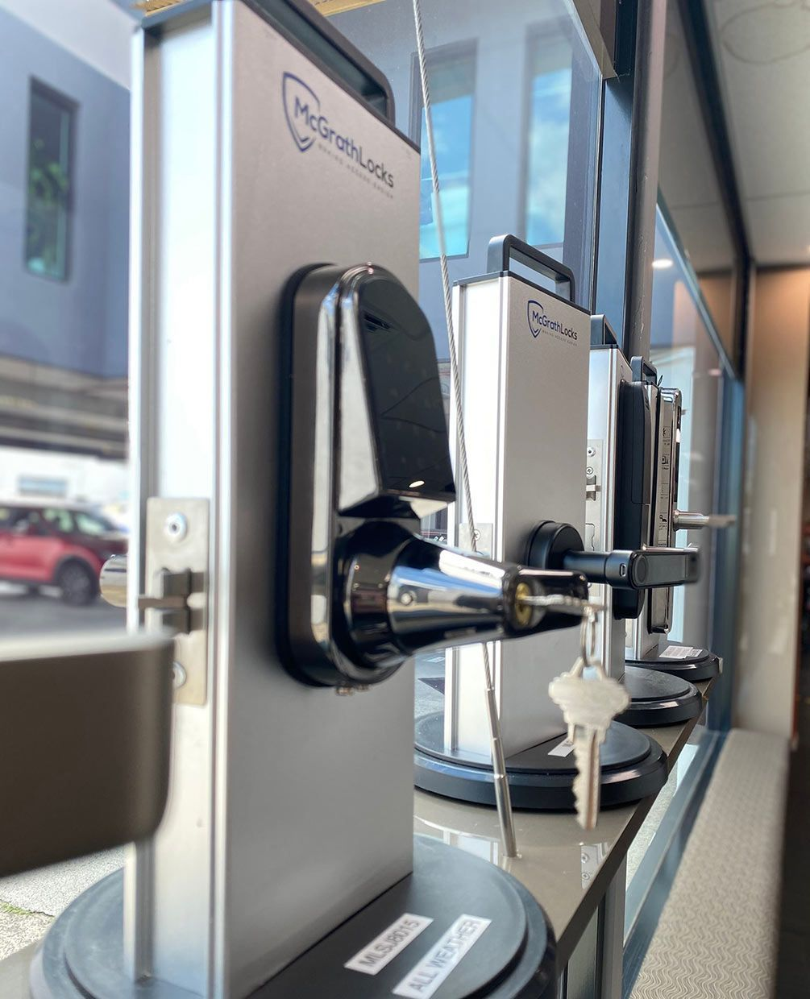
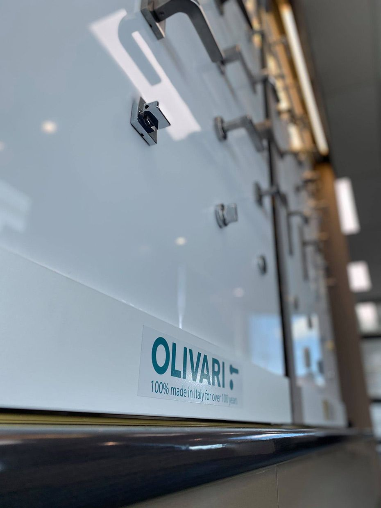

On this page
AT A GLANCE
At SPL Security Solutions, we provide 24/7 mobile locksmith services throughout Kingscliff, bringing professional assistance directly to your location.
Get A Free Quote Now!
Thank you for contacting SPL Security Solutions.
We will be in touch soon.

Mobile Locksmith Services Kingscliff
At SPL Security Solutions, we provide 24/7 mobile locksmith services throughout Kingscliff, bringing professional assistance directly to your location. Whether you’re locked out, need a lock replaced or want to upgrade your security system, our mobile units are fully equipped to handle a variety of tasks efficiently.
By offering on-site services, we save you time and effort, resolving issues without the need for multiple visits or trips to a locksmith. From rekeying locks to advanced automotive key programming and high-security system installations, we prioritise convenience, reliability and your peace of mind.
Call us on (07) 5588 8111 for expert locksmith services, wherever you are in Kingscliff.
Our residential locksmith services in Kingscliff provide tailored solutions to enhance home security. We handle rekeying, lock repairs and installations of smart locks and childproof systems to ensure your property is protected.
Our commercial locksmith services in Kingscliff focus on securing businesses with advanced systems. We provide master key configurations, electronic access control and high-security lock installations to protect assets and operations.
Our automotive locksmith services in Kingscliff offer fast, reliable assistance for car lockouts, ignition issues and key replacements. We specialise in transponder programming and handle a wide range of vehicle models with precision.
Our restricted key systems in Kingscliff prevent unauthorised duplication, providing enhanced access control for sensitive areas. These solutions are ideal for both residential and commercial properties requiring strict security.
We provide safe services in Kingscliff, including installation, unlocking and maintenance. From wall safes and floor safes to digital safes and deposit safes, we ensure your valuables are securely stored and easily accessible when needed.
Our security systems in Kingscliff integrate CCTV cameras, motion detectors and smart alarms to deliver comprehensive protection. These systems can be tailored with features like remote monitoring and mobile app integration for convenience.
Our lock hardware in Kingscliff include durable deadbolts, tamper-resistant locks and innovative smart locks. We ensure each product meets modern security standards and enhances your property’s safety.
Upgrade your property’s doors with our premium door hardware in Kingscliff. We provide sleek handles, weather-resistant hinges and advanced sliding door systems designed for both functionality and style.
Our selection includes fire-resistant door hardware, sleek door closers, and stylish handles, ensuring both practicality and aesthetic appeal for various architectural styles in Kingscliff.
Emergency Locksmith Services Kingscliff
Emergencies can happen unexpectedly, and our team is always ready to respond with effective solutions.
- For homeowners
Locked out or dealing with a broken lock? We provide quick, non-destructive entry solutions and repair services to ensure your home remains secure and accessible. - For business owners
Office lockouts, malfunctioning high-security locks, or broken access control systems can disrupt operations. We respond promptly to resolve these issues and keep your business secure. - For vehicle owners
Whether you’ve lost your car key, need a broken key extracted, or have ignition issues, our mobile locksmiths offer fast solutions like key cutting, fob programming and ignition repairs on-site.

Contact Details
24/7 Emergency Locksmiths or Security Tech


Trading Hours
Retail Shop

Frequently Asked Questions
-
What’s the difference between a traditional lock and a smart lock?
Traditional locks use physical keys for operation, while smart locks can be controlled digitally through a keypad, smartphone app, or even voice commands. Smart locks often include features like remote access, temporary codes for guests and activity logs for enhanced convenience and security.
Locksmith & Security Solutions Gold Coast, Brisbane & Northern NSW